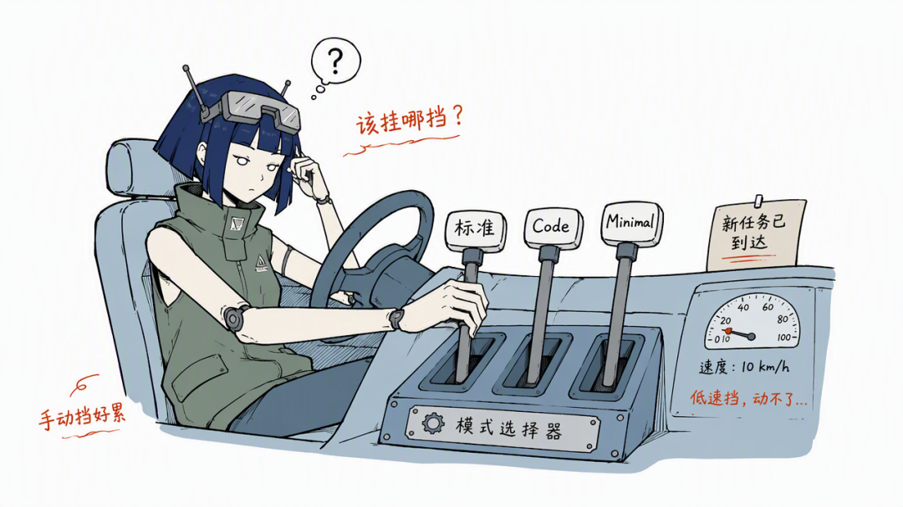
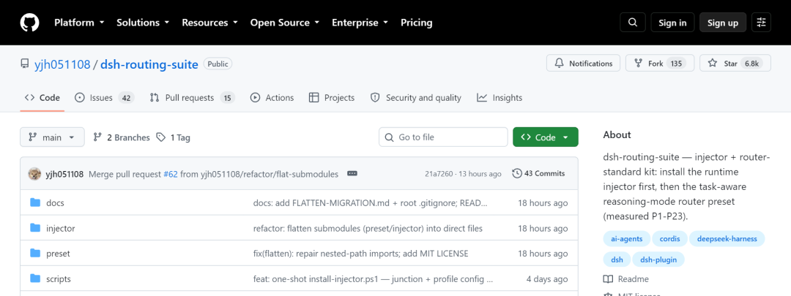
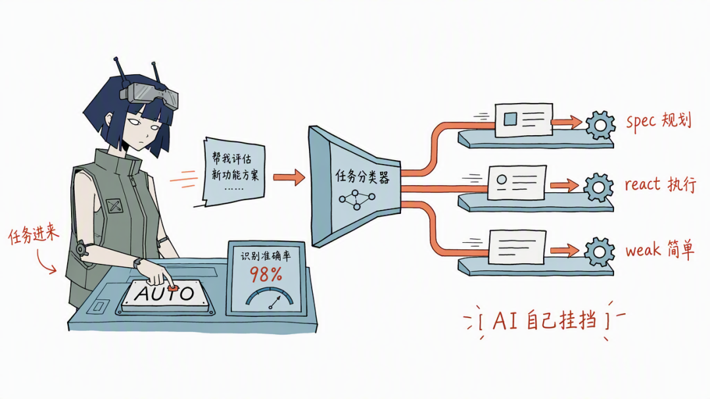
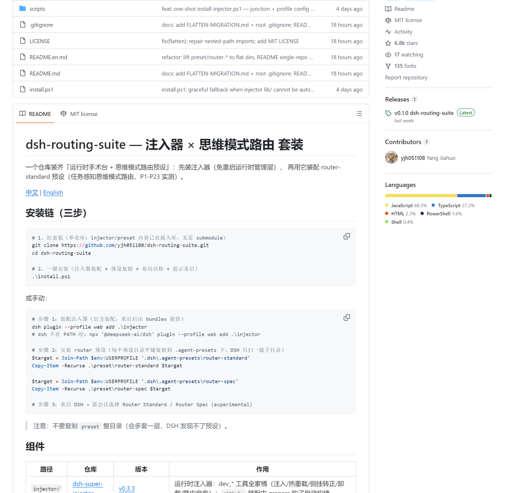
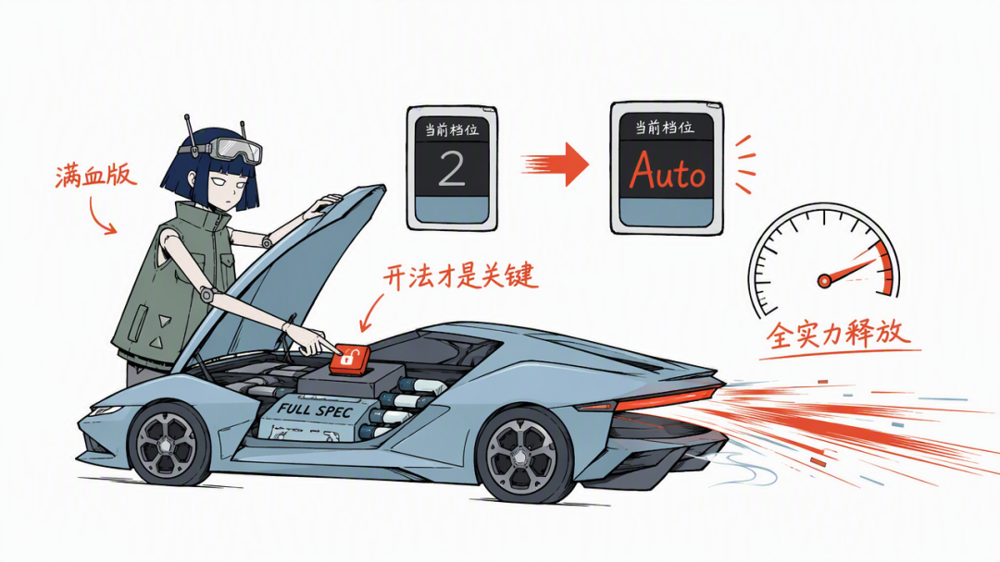

约 2.3 千字
阅读 6 分钟
2026.08.25
一句话：模型升级你没感觉？不是模型不行，是你还没把 DSH 的 Agent 能力跑满——这个一周冲到 6.6k star 的插件，把思维模式切换做成了自动挡。
DeepSeek 升级了你没感觉？你的 DSH 还欠一个满血版
EDITOR'S NOTE 最近 DeepSeek 的动静，说实话不算小。
V4 一套组合拳打下来，V4 Pro 也正式版了，模型能力明摆着是往上走的。
但奇怪的是，这波升级，好像没有当初 V4-Flash 出来时那种惊艳感。
朋友圈转发的少了，讨论也没那么热闹，我自己实测完的感受是：模型肯定是强了，但你要说“卧槽”，还真没有。
直到我把注意力从模型本身挪开，才慢慢想明白一件事——
不是模型不行，是你没用上 Agent 的能力。
SECTION 01
惊艳感，从来不是模型单独给的
当初 Flash 出来那种惊艳，是模型能力单点突破带来的：快、便宜、能力还不差，一个人坐下来聊几句，就能感受到“这玩意变了”。
到了 V4 这代，单点参数带来的感知红利，基本吃完了。
模型更强的部分，藏在跟工具、跟 Agent 的配合里——它能不能自己调工具、能不能分步骤干活、能不能把上下文用明白。
这些能力，你光在对话框里聊聊天，是感受不到的。
DeepSeek Harness 其实把这条路都铺好了：一切皆插件，模式、模板、插件市场，Agent 该有的东西它都有。
问题是，东西就摆在那，你用没用对，是另一回事。
我观察了一圈，绝大多数人，包括最初的我，连模式选择器都没认真用过。
SECTION 02
你的 DSH，一直开的是二挡
DSH 有几种模式：标准、Code、Minimal，还有创造模式。
每种模式，你可以理解成一套预设好的行为包：标准模式啥都能干，Code 模式专注写码，Minimal 模式轻装上阵、能省则省。
按道理，写脚本用标准，改 bug 用 Code，回个简单消息用 Minimal，每个任务对号入座。
但实际操作起来呢？任务一进来，谁有这个闲心先分析“这是什么任务、该用哪个模式”，再手动切过去？
切两次还行，切多了就烦，烦了就不切，不切了就是默认模式走天下。
结果就是：DSH 装了，插件也装了，但你的 Agent 长期在低挡位运行。
这跟买了一台性能车，天天挂二挡在市区爬，是一个道理。
KEY INSIGHT
车是满血版的，开法不是。

◆ 手动挡困境：任务来了，该挂哪挡？
SECTION 03
这个插件，把 DSH 换成了自动挡
前两天翻 GitHub，看到一个东西：dsh-routing-suite。
一句话介绍：给 DSH 装一个运行时注入器，它就能按任务类型自动选思维模式，把模型该有的 Agent 能力真正跑出来。
作者 yjh051108，8 月 14 号开源，一周涨了三千多星，现在 6.6k 出头，直接上了本周的 GitHub 热门。
DSH 自己 8 月才刚公测，一个插件一周追到 6.6k 星，这速度是真的离谱。
仓库地址放这儿：github.com/yjh051108/dsh-routing-suite

◆ 仓库头部：6.8k star · 135 fork（截图时点）
SECTION 04
原理：三档路由，任务一来自己挂挡
它的原理，说人话就三步。
分类
任务进来，先用任务分类器判断，这活属于哪一类。
挂挡
按分类结果路由到对应模式，三档：
热加载
整个装配不用重启 dsh——注入器是运行时生效的，装上就能用，不打断手头的活。
挂挡逻辑，说人话就三档：
spec 档，给规划类任务。先拆解、先想清楚再动手，“帮我设计一个 XX 方案”这种，就归它管。
react 档，给执行类任务。不用想太多，上手就干，改 bug、写代码，归它管。
weak 档，给简单任务。回个消息、答个问题，AI 自己看着办，别把思维链拉满烧钱。
作者自己的实测数据：任务分类准确率 96%，缓存命中率 92-94%。
96%
任务分类准确率
92-94%
缓存命中率
6.6k★
开源一周 Star
分类准，该省的 token 才真省得下来；缓存命中高，速度也掉不下来，这条链路是自洽的。
多说一句，它不是一个孤零零的路由预设，是一个套装：DSH Super Injector（运行时注入器）、DSH Router Standard（路由预设）、DSH Mode Boost，三个社区项目打包。
一句话总结原理：它做了一件特别朴素的事——把“该用哪种模式”这个本该 AI 自己解决的决策，从你手上接了过去。

◆ 三档自动路由：任务进来，AI 自己挂挡
SECTION 05
安装：还是那条命令
Windows 用户最简单，跑一下 install.ps1：装注入器、装预设、提示重启，三步完事。
桌面版更省事，DSH Desktop 的插件管理器里搜 dsh-routing-suite，点安装就行。
命令行用户，dsh 不在 PATH 的话用这条：
npx '@deepseek-ai/dsh' plugin --profile web add .
装完重启 web 服务、刷新页面就生效了。跟上回装别的插件一个流程，零门槛。

◆ README 原文：安装链（三步）与组件表
SECTION 06
我的评价是
先给结论：DSH 用户，这个插件是我目前功能性插件里最推荐装的那一档。
NOTE 丑话也说在前头
社区项目，不是官方出品，没有官方背书。everythingisaplugin.dev 上标了 experimental，issues 里确实有人报过注入器装配失败、预设布局失败的问题，作者在 v0.3.0 更新说明里专门修了“真实装配链路”——翻译一下，早一点的版本装起来是有可能翻车的。
我的建议：装之前花两分钟翻一眼 issues，装完跑不通就去对照已知问题，一般都有解。
反正插件这玩意，装是一条命令，卸也是一条命令，试错成本约等于零，不行就换。
尾声
回到开头那个问题
回到开头那个问题：为啥 V4 升级没啥感觉？
我的答案是：这代模型的红利，不在参数表里，在 Agent 的玩法里。
谁先把 DSH 的能力盘活，谁就能感受到“满血版”到底是个什么体验。网上那句“99% 的人都用错了”的说法可能有点夸张，但方向我觉得没错——DSH 这辆车，确实是满血版的，开法才是关键。
KEY INSIGHT
模型负责变强，我们负责把它的强，用出来。
这可能才是“满血版”三个字的真正意思。

◆ 满血版解锁：挡位从 2 到 Auto
· ◆ ·
以上，既然看到这里了，如果觉得不错，随手点个赞、在看、转发三连吧，如果想第一时间收到推送，也可以给我个星标⭐～
谢谢你看我的文章，我们，下次再见。
/ 作者：Patrick
/ 这里分享好用的AI工具和skill
/ 创作不易，三连支持一下吧~
如果你读到了这里，说明你也惦记着那个“满血版”
感谢你的阅读时间，我们下篇再见。